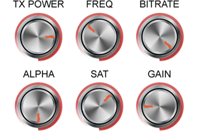
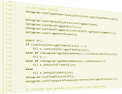

Internet • Wired and Wireless LANs • Mobile Ad-hoc Networks • Sensor Networks • Inter-vehicle and in-vehicle networks • Cellular networks • Satellite communications • Optical networks • Interconnection networks • Networks-on-Chip (NoCs) • Cloud computing • HPC clusters • SANs • Queueing • Resource allocation
OMNEST simulation models provide you with reusable components that you can freely combine in new simulations. The component model also makes simulation models easier to explore, understand, and maintain.

OMNEST simulation components can (and usually do) expose several parameters to allow configuring their behavior. This makes it easier to reuse components for new simulations, and provides a great degree of freedom. Even for large models, the size of the configuration can be kept manageable due to the use of default values and wildcard parameter assignments.

With network simulation, source code availability is a must because you need to know whether and how the model implements various aspects of the real system (e.g. certain protocol features). Having the source also allows you to change or enhance the model to fit your needs. With OMNEST, not only simulation models are open source, but you also have the source code to the full system.